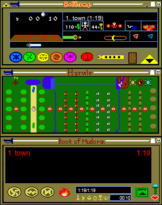
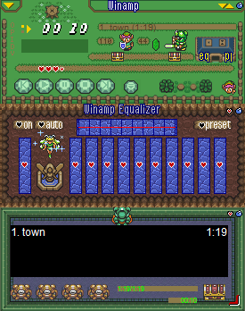
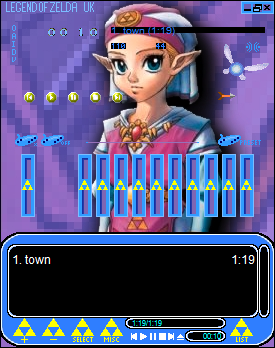
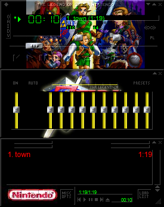
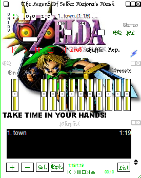

The Legend of Zelda Media Player Skins
(Winamp)

The Legend of Zelda
Archived from an old version of Nintendo of Norway's website (nintendo.no).

DOWNLOAD
 .wsz file (36.4 KB)
.wsz file (36.4 KB)
The Legend of Zelda: A Link to the Past
Archived from an old version of Nintendo of Norway's website (nintendo.no).

DOWNLOAD
.wsz file (80.3 KB)
The Legend of Zelda: Ocarina of Time (Link)
Archived from an old version of Nintendo of Norway's website (nintendo.no).

DOWNLOAD
.wsz file (89.5 KB)
The Legend of Zelda: Ocarina of Time (Zelda)
Archived from an old version of Nintendo of Norway's website (nintendo.no).

DOWNLOAD
.wsz file (189 KB)
The Legend of Zelda: Ocarina of Time
Archived from an old version of Nintendo of Norway's website (nintendo.no).

DOWNLOAD
.wsz file (139 KB)
The Legend of Zelda: Majora's Mask
Archived from an old version of Nintendo of Norway's website (nintendo.no).

DOWNLOAD
.wsz file (190 KB)
The Legend of Zelda: Four Swords Adventures

DOWNLOAD
.wal file (1.18 MB)